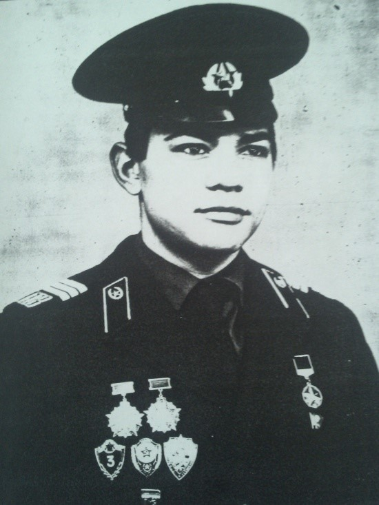
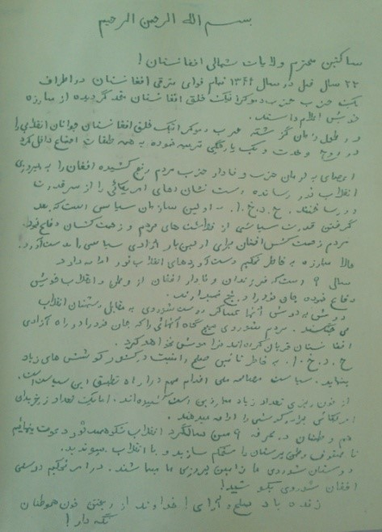
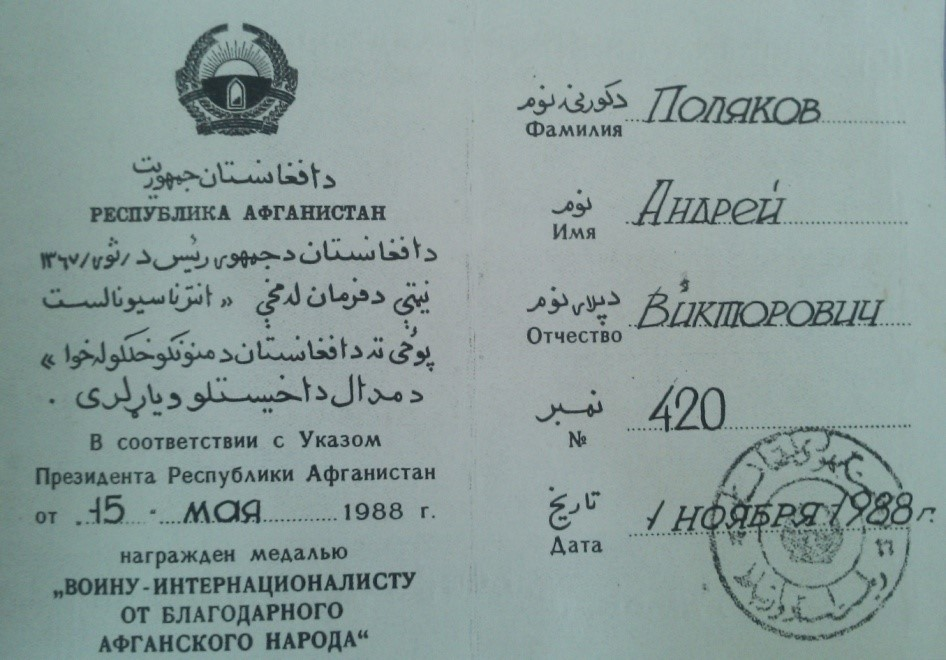
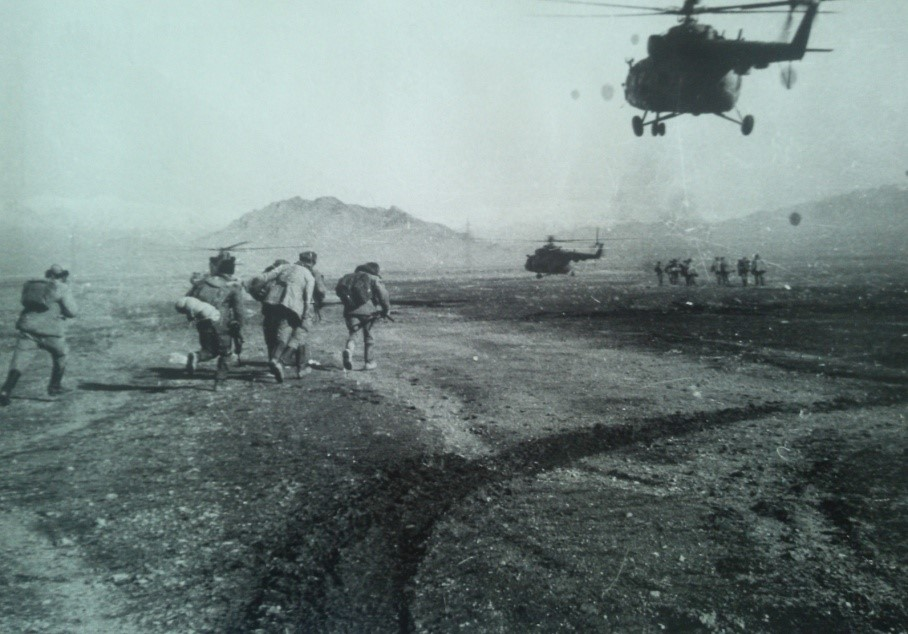
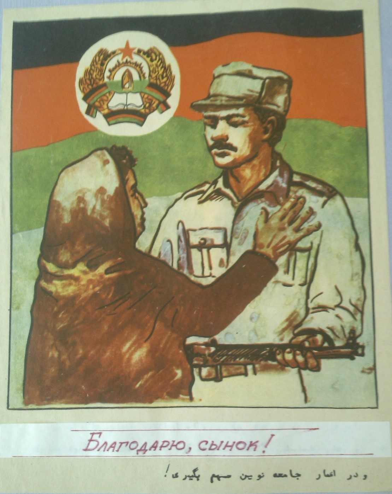

Поляков Андрей Викторович
Родился 04.08.1968 в городе Россь, Волковысского района Гродненской области. Окончил 8 классов 44 –школы в 1983 году. Получил средне-специальное образование в ГПТУ-126. С 1987 по 1988 годы служил в Афганистане (призыв-ноябрь 1986), проходя службу в пограничных войсках.
Получил благодарность от Афганского народа, а также награды 70 лет ВС СССР, удостоен звания «Отличник ПВ 1 и 2 степени». Демобилизовался в феврале 1989 года.
  Самым памятным днем для него является первая встреча с Афганской землей. Глядя в иллюминатор вертолета, он осознавал, что он уже не дома. Здесь все враждебное, чужое.
Летя над Афганской землёй, он вспомнил своего отца, который в годы ВОВ в 14 лет стал партизаном, а затем солдатом Советской Армии и громил врага до Великой Нашей победы.
А потом в памяти возникли строки из стихотворения, написанного отцом:
«Сыны полков, войны священной дети, без нас нигде не обходился бой. Мы шли на смерть за счастья на Планете, жертвуя сознательно собой…»
«…Седеем мы, нас беспокоят раны, но эстафету мужества Мы до сердец ребячьих донести должны…»
Слова отца дошли до ребячьего сердца Андрея. В Афганистане он проявил себя настоящим воином-интернационалистом.
